전자계산기조직응용기사 (2019-03-03 기출문제)
1과목: 전자계산기 프로그래밍
1. 어셈블리어에서 DOS나 BIOS 루틴을 호출하기 위해 사용하는 명령은?
- INT
- TITLE
- INC
- REP
(정답률: 57%)

2. C 언어에서 이스케이프 시퀀스의 설명이 옳지 않은 것은?
- ＼r:carriage return
- ＼f:fault
- ＼t:tab
- ＼b:backspace
(정답률: 81%)
3. 럼바우의 객체 모델링 기법에서 사용하는 세 가지 모델링이 아닌 것은?
- 객체 모델링
- 동적 모델링
- 정적 모델링
- 기능 모델링
(정답률: 72%)
4. C 언의의 기억 클래스 종류가 아닌 것은?
- 내부 변수(internal variables)
- 자동 변수(automatic variables)
- 레지스터 변수(register variables)
- 정적 변수(static variables)
(정답률: 75%)
5. C 언어에서 x의 연산 결과는?
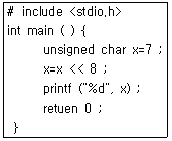
- 0
- 56
- 192
- 256
(정답률: 57%)
6. 고 수준 언어로 작성 된 원시 프로그램을 컴퓨터 주 메모리에 적재해 두고, 그 중 한 명령문씩 꺼내어 이를 해석기에서 중간어로 전환하여 곧바로 실행시키는 것은?
- Loader
- Linker
- Compiler
- Interpreter
(정답률: 66%)
7. 객체지향에서 캡슐화에 대한 설명으로 옳지 않은 것은?
- 결합도가 높아진다.
- 재사용이 용이하다.
- 인터페이스를 단순화시킬 수 있다.
- 응집도가 향상된다.
(정답률: 73%)
8. 작성된 표현식이 BNF의 정의에 의해 바르게 작성되었는지를 확인하기 위하여 만든 트리는?
- menu tree
- king tree
- parse tree
- home tree
(정답률: 86%)
9. C 언어 명령문 중 “do~while” 문에 대한 설명으로 옳지 않은 것은?
- 명령의 조건이 거짓일 때 loop를 반복 처리한다.
- 명령의 조건이 거짓일 때도 최소한 한번은 처리한다.
- 무조건 한 번은 실행하고 경우에 따라서는 여러 번 실행하는 처리에 사용하면 유용하다.
- 제일 마지막 문장에 “;” 기호가 필요하다.
(정답률: 79%)
10. 수명 시간동안 고정된 하나의 값과 이름을 가진 자료로서 프로그램이 작동하는 동안 값이 절대로 바뀌지 않는 것을 의미하는 것은?
- 상수
- 변수
- 포인터
- 함수
(정답률: 82%)
11. 객체지향에서 객체가 메시지를 받아 실행해야 할 객체의 구체적인 연산을 정의한 것은?
- 패키지
- 메소드
- 클래스
- 모듈
(정답률: 82%)
12. C 언어에서 참조호출(call by reference)의 효과를 얻기 위해 사용하는 형식 매개변수는?
- 주소연산자(&)
- 간접값연산자(*)
- 단항연산자(-)
- 증가연산자(+)
(정답률: 50%)
13. 어셈블리어의 매크로 기능에 대한 설명으로 가장 옳은 것은?
- 어셈블리 언어로 작성한 프로그램을 다른 컴퓨터의 기계어로 변환시키는 기능이다.
- 어셈블리 언어로 작성한 프로그램 내에 다른 고급 언어를 삽입할 수 있는 기능이다.
- 고급 언어로 작성된 프로그램 내에 어셈블리 언어의 문장 및 함수 등을 삽입시키는 기능이다.
- 어셈블리 프로그램에서 반복적으로 나타나는 코드들을 묶어 하나의 새로운 명령으로 정의시키는 기능이다.
(정답률: 82%)
14. 컴퓨터를 이용하여 단계적인 문제를 해결하기 위한 단계적인 절차를 무엇이라 하는가?
- 객체지향
- 자료구조
- 구조적 방법
- 알고리즘
(정답률: 65%)
15. BNF 표기법에서 정의를 나타내는 기호는?
- ==
- ＜＞
- |
- ::=
(정답률: 74%)
16. 원시 프로그램을 기계어 프로그램으로 번역하는 대신에 기존 고수준 컴파일러 언어로 전환하는 역할을 수행하는 것은?
- Loader
- Linker
- Preprocessor
- Cross compiler
(정답률: 50%)
17. C 언어에서 나머지를 구하는 잉여 연산자(modular-operator)는?
- #
- $
- &
- %
(정답률: 79%)
18. 간접번지 지정방식을 나타내는 어셈블리 명령의 형태에 해당하는 것은?
- MOV AX, 1234H
- MOV DS, AX
- MOV AX, [BA+DI+4]
- MOV AX, AAA
(정답률: 54%)
19. 기계어에 대한 설명으로 틀린 것은?
- 각 컴퓨터마다 모두 같은 기계어를 가진다.
- 컴퓨터가 해석할 수 있는 1 또는 0의 2진수로 이루어진다.
- 실행할 명령, 데이터, 기억 장소의 주소 등을 포함한다.
- 프로그램 작성이 어렵고 복잡하다.
(정답률: 82%)
20. C 언어에서 연산자의 우선순위가 낮은 순서에서 높은 순서로 옳게 나열된 것은?
- 대입→단항→이항→삼항
- 대입→삼항→이항→단항
- 단항→이항→삼항→대입
- 삼항→이항→단항→대입
(정답률: 50%)
2과목: 자료구조 및 데이터통신
21. UDP(User Datagram Protocol)에 대한 설명으로 거리가 먼 것은?
- 데이터 전달의 신뢰성을 확보한다.
- 비연결형 프로토콜이다.
- 복구 기능을 제공하지 않는다.
- 수신된 데이터의 순서 재조정 기능을 지원하지 않는다.
(정답률: 62%)
22. 패킷교환 종류 중 가상회선방식에 대한 설명으로 틀린 것은?
- 전송 중에는 동일한 경로를 갖는다.
- 패킷마다 목적지로 가기 위한 경로 배정이 독립적으로 이루어진다.
- 연결 지향 서비스라고도 한다.
- 패킷을 전송하기 가상회선을 먼저 만든다.
(정답률: 46%)
23. 채널의 대역폭이 12kHz이고 S/N비가 15일 때, 채널용량(kbps)은? (단, S/N:신호대 잡음비)
- 12
- 48
- 56
- 68
(정답률: 68%)
24. 사내망에서 192.168.1.1/28 주소를 사용하고 있는 PC가 있다. 회사의 정책상 default-gateway는 해당 subnet의 할당 가능한 영역 중에서 마지막 IP address 를 사용하도록 되어 있다면 PC의 default-gateway는 어떠한 IP assress로 설정하여야 하는가?
- 192.168.5.255
- 192.167.6.13
- 192.168.1.14
- 192.168.1.255
(정답률: 53%)
25. 보호주파수대(guard band)를 사용하는 다중화방식은?
- FDM
- TDM
- STDM
- SGM
(정답률: 67%)
26. 회선의 변조속도가 2400baud이고, 8-QAM을 사용할 때 얻을 수 있는 데이터 속도(bps)는?
- 2400
- 4800
- 7200
- 19200
(정답률: 74%)
27. 전진 에러 수정 방식에서 에러를 수정하기 위해 사용하는 방식은?
- 해밍 코드 방식
- 압축 방식
- 패리티 비트 방식
- 허프만 코딩 방식
(정답률: 70%)
28. HDLC는 링크 구성 방식에 따라 세 가지 동작모드를 가진다. 이에 해당하지 않는 것은?
- NBM
- ABM
- ARM
- NRM
(정답률: 67%)
29. 라우팅 프로토콜에 해당하지 않은 것은?
- BGP
- OSPF
- SNMP
- RIP
(정답률: 68%)
30. IEEE 802.4는 무엇에 대한 규격인가?
- CSMA/CD
- Packet Ring
- Token Bus
- WLAN
(정답률: 67%)
31. 스택 S에서 B, A, D, C를 순서대로 입력시킬 때, 출력을 A, B, C, D 순으로 하기 위한 push와 pop의 횟수는?
- push:4, pop:4
- push:3, pop:5
- push:2, pop:6
- push:5, pop:3
(정답률: 71%)
32. 주어진 파일에서 인접한 2개의 레코드 키 값을 비교하여 그 크기에 따라 레코드 위치를 서로 교환하는 정렬 방식은?
- 선택 정렬
- 삽입 정렬
- 퀵 정렬
- 버블 정렬
(정답률: 82%)
33. 트랜잭션의 특성에 해당하지 않는 것은?
- Integrity
- Atomicity
- Consistency
- Durability
(정답률: 69%)
34. 다음 그림에서 “트리의 차수(Degree)”는?
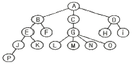
- 2
- 3
- 4
- 5
(정답률: 84%)
35. 다음 산술식을 Pre-fix로 옳게 표현한 것은?
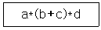
- **a+bcd
- *+a*bcd
- abc*+d*
- abc+*d*
(정답률: 69%)
36. 인덱스된 순차파일(Indexed Sequential File)의 색인 구역(Index Area)에 해당하지 않는 것은?
- Track index area
- Cylinder index area
- Master index area
- Record index area
(정답률: 83%)
37. 데이터베이스의 3단계 스키마에 해당하지 않는 것은?
- 내부 스키마
- 외부 스키마
- 개념 스키마
- 계층 스키마
(정답률: 86%)
38. 스키마의 종류 중 데이터베이스의 전체적인 논리적 구조로서, 모든 응용 프로그램이나 사용자들이 필요로 하는 데이터를 종합한 조직 전체의 데이터베이스로 하나만 존재하는 것은?
- 개념 스키마
- 내부 스키마
- 외부 스키마
- 응용 스키마
(정답률: 74%)
39. 해싱에서 서로 다른 두 개의 키 값이 같은 해시(hash) 주소를 갖는 현상을 무엇이라고 하는가?
- Mis square
- Chaining
- Parsing
- Collision
(정답률: 85%)
40. 다음 트리를 후위 순회(Post-order) 방법으로 운행한 결과는?
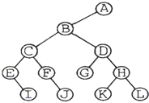
- A B C E I F J D G H K L
- I E J F C G K L H D B A
- A B C D E F G H I J K L
- E I C F J B G D K H L A
(정답률: 76%)
3과목: 전자계산기구조
41. 반가산기에서 입력을 X, Y라 할 때 출력부분의 캐리(carry) 값은?
- XY
- X
- Y
- X+Y
(정답률: 61%)
42. Flynn의 컴퓨터 시스템 분류 제안 중에서 하나의 데이터 흐름이 다수의 프로세서들로 전달되며, 각 프로세서는 서로 다른 명령어를 실행하는 구조는?
- 단일 명령어, 단일 데이터 흐름
- 단일 명령어, 다중 데이터 흐름
- 다중 명령어, 단일 데이터 흐름
- 다중 명령어, 다중 데이터 흐름
(정답률: 63%)
43. 메모리 버퍼 레지스터(MBR)의 설명으로 옳은 것은?
- 다음에 실행할 명령어의 번지를 기억하는 레지스터
- 현재 실행 중인 명령의 내용을 기억하는 레지스터
- 기억장치를 출입하는 데이터가 일시적으로 저장되는 레지스터
- 기억장치를 출입하는 데이터의 번지를 기억하는 레지스터
(정답률: 67%)
44. 사이클 타임이 750ns의 기억장치에서는 이론적으로 초당 몇 개의 데이터를 불러 낼 수 있는가?
- 약 750개
- 약 1330개
- 약 1.3×106개
- 약 750×106개
(정답률: 51%)
45. 명령어가 오퍼레이션 코드(OP code) 6비트, 어드레스 필드 16비트로 되어 있다. 이 명령어를 쓰는 컴퓨터의 최대 메모리 용량은?
- 16K word
- 32K word
- 64K word
- 1M word
(정답률: 56%)
46. 시프트 레지스터(shift register)의 내용을 오른쪽으로 한 번 시프트하면 데이터는 어떻게 변하는가?
- 기존 데이터의 1/2
- 기존 데이터의 1/.3
- 기존 데이터의 1/4
- 기존 데이터의 1/10
(정답률: 84%)
47. 베이스레이스터 주소지정방식의 특징이 아닌 것은?
- 베이스레지스터가 필요하다.
- 프로그램의 재배치가 용이하다.
- 다중 프로그래밍 기법에 많이 사용된다.
- 명령어의 길이가 절대주소지정방식보다 길어야 한다.
(정답률: 75%)
48. CPU 내부의 레지스터 중 프로그램 제어와 관계있는 것은?
- memory address register
- index register
- accumulator
- status register
(정답률: 53%)
49. 가상기억장치에서 주소 공간이 1024K, 기억공간은 32K라고 가정할 때 주기억장치의 주소 레지스터는 몇 비트로 구성되는가?
- 12
- 13
- 14
- 15
(정답률: 68%)
50. I/O operation과 관계가 없는 것은?
- channel
- handshaking
- interrupt
- emulation
(정답률: 66%)
51. 기억장치에 기억된 정보를 액세스하기 위하여 주소를 사용하는 것이 아니라 기억된 정보의 일부분을 이용하여 원하는 정보를 찾는 것은?
- Random Access Memory
- Associative Memory
- Read Only Memory
- Virtual Memory
(정답률: 77%)
52. 채널(Channel)에 대한 설명으로 가장 옳지 않은 것은?
- DMA와 달리 여러 개의 블록을 입출력할 수 있다.
- 시스템의 입출력 처리 능력을 향상시키는 기능을 한다.
- 멀티플렉서 채널은 저속인 여러 장치를 동시에 제어하는 데 적합하다.
- 입출력 동작을 수행하는데 있어서 CPU의 지속적인 개입이 필요하다.
(정답률: 73%)
53. 다음 중 타이머에 의한 인터럽트(Interrupt)는?
- 프로그램 인터럽트
- I/O 인터럽트
- 외부 인터럽트
- 머신 체크 인터럽트
(정답률: 47%)
54. 디코더(decoder)의 출력이 4개일 때 입력개수는?
- 1
- 2
- 8
- 16
(정답률: 63%)
55. DMA 제어기에서 CPU와 I/O 장치 사이의 통신을 위해 반드시 필요한 것이 아닌 것은?
- address register
- word count register
- address line
- device register
(정답률: 50%)
56. 기억장치를 각 모듈이 번갈아 가며 접근하는 방법은?
- 페이징
- 스테이징
- 인터리빙
- 세그먼팅
(정답률: 73%)
57. 다음 진리표에 해당하는 논리식은?
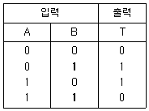
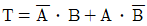
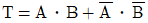
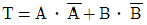
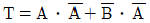
(정답률: 78%)
58. 기억장치의 구조가 stack 구조를 가질 때 가장 밀접한 관계가 있는 명령어는?
- one-address
- two-address
- three-address
- zero-address
(정답률: 56%)
59. 블루레이 디스크(Blue-ray Disc)에 관한 설명으로 틀린 것은?
- 저장된 데이터를 읽기 위해 적색 레이저(650nm)를 사용한다.
- 비디오 포맷은 DVD와 동일한 MPEG-2 기반 코덱이 사용된다.
- 단층 기록면을 가지는 12cm 직경에 25GB 정도의 데이터를 저장할 수 있다.
- BD-ROM(읽기 전용), BD-R(기록가능), BD-RE(재기록가능)가 있다.
(정답률: 60%)
60. PE(processing element)라는 연산기를 사용하여 동기적 병렬 처리를 수행하는 것은?
- Pipeline processor
- Vector processor
- Multi processor
- VLSI processor
(정답률: 48%)
4과목: 운영체제
61. UNIX에서 파일 사용 권한 지정에 관한 명령어는?
- mv
- Is
- chmod
- fork
(정답률: 82%)
62. 기억장치의 고정 분할 할당에서 총 24K의 공간이 그림과 같이 8K, 8K, 4K, 4K로 나누어져 있고, 작업 큐에는 5K, 5K, 10K, 10K의 작업이 순차적으로 대기 중이라고 할 때 발생하는 전체 기억공간의 낭비를 계산하면?
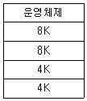
- 6K
- 14K
- 18K
- 20K
(정답률: 52%)
63. 프로세스가 실행되면서 하나의 페이지를 일정시간동안 집중적으로 액세스하는 현상은?
- 구역성(locality)
- 스래싱(thrashing)
- 워킹세트(working set)
- 프리페이징(prepaging)
(정답률: 52%)
64. 150K의 작업요구시 fist fit과 best fit 전략을 각각 적용할 경우, 할당 영역의 연결이 옳은 것은?
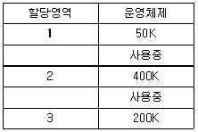
- first fit:2, best fit:3
- first fit:3, best fit:2
- first fit:1, best fit:2
- first fit:3, best fit:1
(정답률: 83%)
65. Microsoft의 Windows 운영체제의 특징이 아닌 것은?
- GUI기반 운영체제이다.
- 트리 디렉터리 구조를 가진다.
- 선점형 멀티태스킹 방식을 사용한다.
- 소스가 공개된 개방형(Open)시스템이다.
(정답률: 61%)
66. 전송크기가 1KB(kilo byte)일 때, 이동헤드 디스크의 데이터 액세스 시간과 고정헤드의 데이터 액세스 시간(ms)을 구한 결과는?
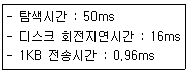
- 이동헤드:66.96, 고정헤드:16.96
- 이동헤드:16.96, 고정헤드:66.96
- 이동헤드:50.96, 고정헤드:16.96
- 이동헤드:16.96, 고정헤드:50.96
(정답률: 56%)
67. 공유자원을 어느 시점에서 단지 한 개의 프로세스만이 사용할 수 있도록 하며, 다른 프로세스가 공유자원에 대하여 접근하지 못하게 제어하는 기법은?
- mutual exclusion
- critical section
- deadlock
- scatter loading
(정답률: 58%)
68. 운영체제의 프로세스(Process)에 대한 설명으로 옳지 않은 것은?
- 트랩 오류, 프로그램 요구, 입ㆍ출력 인터럽트에 대해 조치를 취한다.
- 비동기적 행위를 일으키는 주체로 정의할 수 있다.
- 실행중인 프로그램을 말한다.
- 프로세스는 각종 자원을 요구한다.
(정답률: 49%)
69. 4개의 페이지를 수용할 수 있는 주기억장치가 있으며, 초기에는 모두 비어 있다고 가정한다. 다음의 순서로 페이지 참조가 발생할 때, FIFO 페이지 교체 알고리즘을 사용할 경우 페이지 결함의 발생 횟수는?
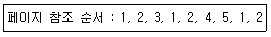
- 6회
- 7회
- 8회
- 9회
(정답률: 67%)
70. 완전연결(Fully Connection)형 분산처리 시스템에 관한 설명으로 옳지 않은 것은?
- 각 사이트들이 시스템 내의 다른 모든 사이트들과 직접 연결된 구조이다.
- 하나의 링크가 고장 나더라도 다른 링크를 이용할 수 있다.
- 사이트 수가 n개이면 링크 연결 수는 n-1개이다.
- 기본비용은 많이 들지만 통신비용은 적게 들고, 신뢰성이 높다.
(정답률: 55%)
71. 파일 디스크립터(File Descriptor)에 관한 설명으로 옳지 않은 것은?
- 사용자가 직접 참조할 수 있다.
- 파일마다 독립적으로 존재하며, 시스템에 따라 다른 구조를 가질 수 있다.
- 대개 보조기억장치에 저장되어 있다가 해당파일이 열릴(Open) 때 주기억장치로 옮겨진다.
- 파일을 관리하기 위해 시스템(운영체제)이 필요로 하는 파일에 대한 정보를 갖고 있는 제어블록(FCB)이다.
(정답률: 67%)
72. 분산 처리 시스템에 대한 설명으로 옳지 않은 것은?
- 연산속도, 신뢰성, 사용 가능도가 향상된다.
- 시스템의 점진적 확장이 용이하다.
- 중앙 집중형 시스템에 비해 시스템 설계가 간단하고 소프트웨어 개발이 쉽다.
- 단일 시스템에 비해 처리 능력과 저장용량이 높고 신뢰성이 향상된다.
(정답률: 78%)
73. 분산운영체제에 대한 설명을 모두 옳게 나열한 것은?
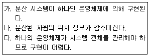
- 가
- 가, 나
- 가, 다
- 가, 나, 다
(정답률: 46%)
74. HRN 스케쥴링 방식에서 입력된 작업이 다음과 같을 때 우선순위가 가장 높은 것은?
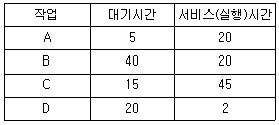
- A
- B
- C
- D
(정답률: 71%)
75. 운영체제의 역할로 가장 옳지 않은 것은?
- 사용자 인터페이스 제공
- 입ㆍ출력에 대한 보조역할 수행
- 사용자들 간 하드웨어 자원의 공동 사용
- 원시프로그램을 목적프로그램으로 변환
(정답률: 78%)
76. 다음 중 교착상태가 발생할 수 있는 필요충분조건은?
- 중단 조건(Preemption)
- 환형 대기(Circular wait)
- 기아 상태(Starvation)
- 동기화(Synchronization)
(정답률: 67%)
77. Cryptography와 가장 관계 없는 것은?
- RISC
- DES Algorithm
- Public key system
- RSA Algorithm
(정답률: 72%)
78. 운영체제에서 스레드(Thread)의 개념으로 옳지 않은 것은?
- 다중 프로그래밍 시스템에서 CPU를 받아서 수행되는 프로그램 단위이다.
- 프로세스(Process)나 태스크(Task)보다 더 작은 단위이다.
- 입ㆍ출력장치와 같은 자원의 할당에 관계된다.
- 한 태스크(Task)는 여러 개의 스레드(Thread)로 나누어 수행될 수 있다.
(정답률: 41%)
79. 데이터 발생 즉시, 또는 데이터 처리 요구가 있는 즉시 처리하여 결과를 산출하는 방식으로 정해진 시간 내에 결과를 도출하는 시스템은?
- 분산 처리 시스템
- 실시간 처리 시스템
- 배치 처리 시스템
- 시분할 처리 시스템
(정답률: 80%)
80. SJF(Shortest Job First) 스케줄링에서 다음과 같은 작업들이 준비상태 큐에 있을 때 평균 반환시간과 평균 대기시간은?
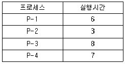
- 평균 반환시간:13, 평균 대기시간:7
- 평균 반환시간:13, 평균 대기시간:9
- 평균 반환시간:15, 평균 대기시간:7
- 평균 반환시간:15, 평균 대기시간:9
(정답률: 55%)
5과목: 마이크로 전자계산기
81. 주기억장치로부터 캐시 메모리로 데이터를 전송하는 방법이 아닌 것은?
- Indirect mapping
- Associative mapping
- Direct mapping
- Set- associative mapping
(정답률: 40%)
82. 어셈블리 명령어 중 BNE(Branch if Not Equal) 명령문이 수행될 때 점검하는 플래그(flag)는?
- 캐리(carry) 플래그
- 오버플로우(overflow) 플래그
- 영(zero) 플래그
- 음수(negative) 플래그
(정답률: 58%)
83. 마이크로컴퓨터에서 주로 사용되지 않는 보조기억장치는?
- 자기테이프
- 솔리드 스테이트 드라이브
- 하드 디스크 드라이브
- 플래시 저장장치
(정답률: 70%)
84. 레지스터의 역할이 아닌 것은?
- 인스트럭션의 저장
- 데이터의 저장
- 주소의 저장
- 제어신호의 저장
(정답률: 54%)
85. 그림은 마이크로프로세서와 메모리 사이의 관계를 설명한 것이다. B의 내용으로 알맞은 것은?
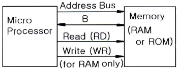
- I/O Bus(IOBUS)
- Data Bus(DBUS)
- Control Lines
- Control Signal
(정답률: 77%)
86. 어셈블리어에서 기계와 1대 1의 대응관계가 있는 알파벳 코드는?
- 그레이 코드
- 니모닉 코드
- 오브젝트 코드
- 소스 코드
(정답률: 65%)
87. 레지스터의 값을 0(zero)으로 하기 위해 사용되는 연산명령이 아닌 것은?
- OR 연산
- AND 연산
- XOR 연산
- SUB 연산
(정답률: 56%)
88. ROM의 기억 특성은?
- 휘발성이며, 파괴적으로 읽는다.
- 비휘발성이며, 파괴적으로 읽는다.
- 휘발성이며, 비파괴적으로 읽는다.
- 비휘발성이며, 비파괴적으로 읽는다.
(정답률: 73%)
89. DMA동작 시 사용되는 레지스터로 가장 적합하지 않은 것은?
- 제어 레지스터
- 주소 레지스터
- 데이터 레지스터
- 카운터
(정답률: 25%)
90. 입출력 인터페이스(I/O interface) 구성에 꼭 필요한 부분이라고 볼 수 없는 것은?
- 주소 버스
- 데이터 버스
- 제어 버스
- 명령어 디코더
(정답률: 75%)
91. 다음 중 인터럽트(interrupt)에 대한 설명으로 가장 옳지 않은 것은?
- 인터럽트는 기계적 고장이나 프로그램 수행 중 잘못된 데이터 등에 의해서 발생된다.
- 입ㆍ출력 시 인터럽트의 필요성은 중앙처리장치와 주변장치의 속도차이 때문이다.
- 입ㆍ출력 인터럽트를 사용하면 하드웨어(hardware)의 운영이 비효율적이다.
- 인터럽트 취급 루틴에서 반드시 사용하는 레지스터는 PC(Program Counter)이다.
(정답률: 59%)
92. 그림은 어느 회로의 벤다이어 그램인가? (단, A, B는 입력, 사선부분은 출력)
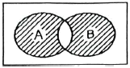
- NOR
- NAND
- XNOR
- XOR
(정답률: 49%)
93. 스택(stack)과 관련된 주소 방식은?
- 0-address
- 1-address
- 2-address
- 3-address
(정답률: 67%)
94. 단일 집적회로 내에 들어 있는 프로세서, 메모리, 일부 I/O 디바이스를 의미하는 것은?
- 마이크로메모리
- 마이크로디바이스
- 마이크로컨트롤러
- 마이크로프로그램
(정답률: 50%)
95. 명령어의 번지 필드가 가리키는 번지에 유효번지가 있는 어드레싱 모드는?
- base register addressing mode
- indexed addressing mode
- relative addressing mode
- indirect addressing mode
(정답률: 45%)
96. 마이크로프로세서 내의 연산 결과가 틀렸음을 나타내주는 플래그는?
- CARRY
- ZERO
- OVERFLOW
- SIGN
(정답률: 50%)
97. 데이터 전송 명령어가 아닌 것은?
- 메모리 전송 명령어
- 입ㆍ출력 명령어
- 스택 명령어
- 서포트 명령어
(정답률: 58%)
98. Static RAM을 구성하는 회로는?
- 플립플롭
- 인코더
- 단안전 멀리바이브레이터
- 비안정 멀티바이브레이터
(정답률: 75%)
99. 입출력 채널에 의한 입출력 방식 중 한 번에 여러 개의 장치들에 대한 입출력을 동시에 제어할 수 있는 것은?
- Selector Channel
- Byte Channel
- Multiplexer Channel
- Multi-Device Channel
(정답률: 78%)
100. Isolated I/O 방식에 대한 설명으로 가장 옳지 않은 것은?
- 별개의 I/O 명령을 사용한다.
- 입출력 포트가 기억장치 주소공간의 일부이다.
- 메모리 공간이 넓다.
- 입출력 장치들의 주소 공간이 주기억장치 주소 공간과는 별도로 할당된다.
(정답률: 43%)